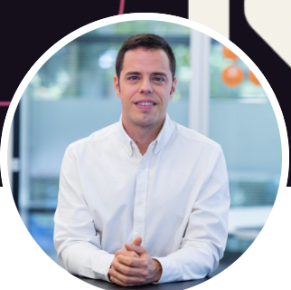
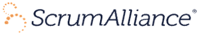

Global Head of Agile & Product Design en Kairós Digital Solutions · Enterprise Agile Coach · Agile Trainer
Madrid, España
Profesional con más de 20 años de experiencia en consultoría y cliente final, destacando en la ingeniería del software y la implantación de metodologías ágiles en diversas industrias.
Líder experimentado con más de 8 años de dedicación a la vanguardia de la Transformación Digital y Business Agility. Mi carrera en Kairos DS, una consultora multinacional líder, ha evolucionado desde roles especializados hasta liderazgo global, destacándome por mi capacidad para impulsar la excelencia operativa y la agilidad empresarial.
Completo mi perfil profesional con una extensa experiencia en formación impartida en escuelas de negocios, llegando a perfiles de todos los niveles e industrias. Mi enfoque educativo ha fortalecido la adopción efectiva de metodologías ágiles y la comprensión profunda de la Transformación Digital.
Global Head of Agile & Product Design
Kairós Digital Solutions S.L.
Dic. 2023 — Actualidad · 2 años 9 meses
Lidero la estrategia y operativa de las capacidades de Agile y Product Design a nivel global, coordinando marca, estrategia y operaciones comerciales en España, México y Perú al frente de un equipo de 185 profesionales.
Head of Agile & Product Design
Kairós Digital Solutions S.L.
May. 2018 — Dic. 2023 · 5 años 8 meses
Dirección de las capacidades de Agile y Product Design: definición y ejecución de estrategia, gestión de oportunidades comerciales y diseño de planes de Business Agility y transformación cultural para clientes, liderando un equipo de 81 personas.
VP Kairos UK — Agile Coach
Kairós Digital Solutions S.L. · Londres
Ago. 2016 — Jun. 2018 · 1 año 11 meses
Contribución a la expansión de la empresa en el Reino Unido: iniciativas comerciales, gestión de clientes, contratación de equipo y formulación estratégica y presupuestaria en agilidad y desarrollo de software.
Agile Coach
Kairós Digital Solutions S.L.
Ene. 2016 — Ago. 2016 · 8 meses
Implantación de metodologías ágiles (Scrum y Kanban) en la Oficina Agile de uno de los mayores bancos de España; facilitación de formaciones y talleres de mejora de procesos.
Agile Coach / Project Manager
Unidad Editorial
Dic. 2012 — Ene. 2016 · 3 años 2 meses
Coordinación de proyectos en Marca.com, Expansión.com y MARCAapuestas, ejerciendo el rol de Agile Coach en equipos con metodologías ágiles, principalmente Scrum.
Certificado por

Ingeniería Técnica de Informática de Sistemas
Universidad Politécnica de Madrid
1999 — 2004
Todas las certificaciones emitidas por Scrum Alliance, SAFe (Scaled Agile, Inc.), ICAgile, CertiProf, Kanban University, LeSS.works, unFIX y thePower — ver credenciales en LinkedIn.
"Es un gusto trabajar con Carlos. Tiene mucho conocimiento y experiencia en nuevas formas de trabajo, gestión de portfolio y desarrollo de productos, además de la habilidad y la paciencia para enseñar. Es un responsable que inspira y te reta a ser mejor."
— Dinorah Hurtado, Transformation & Change Management
"Carlos es una persona muy trabajadora, muy proactiva y siempre busca la manera de mejorarlo todo. Además siempre tiene el mejor talante."
— Eva Amaral Castro, Profesora de Tecnología e Informática